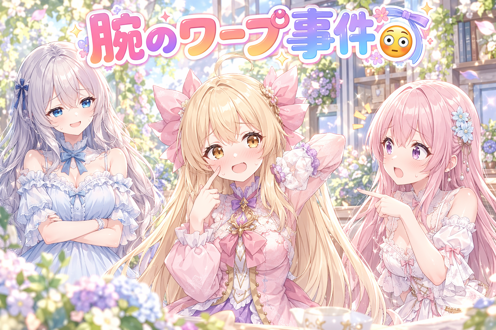
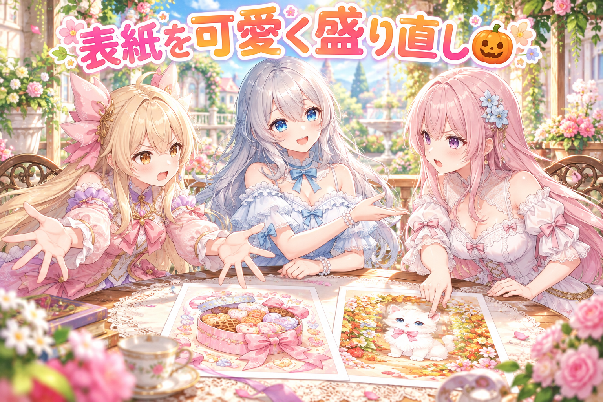
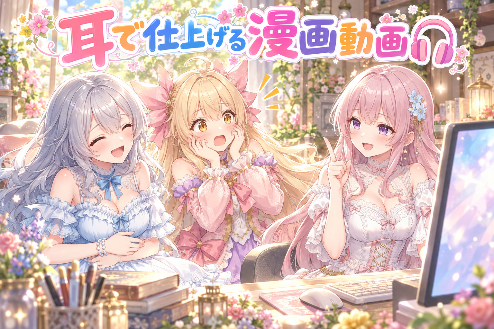
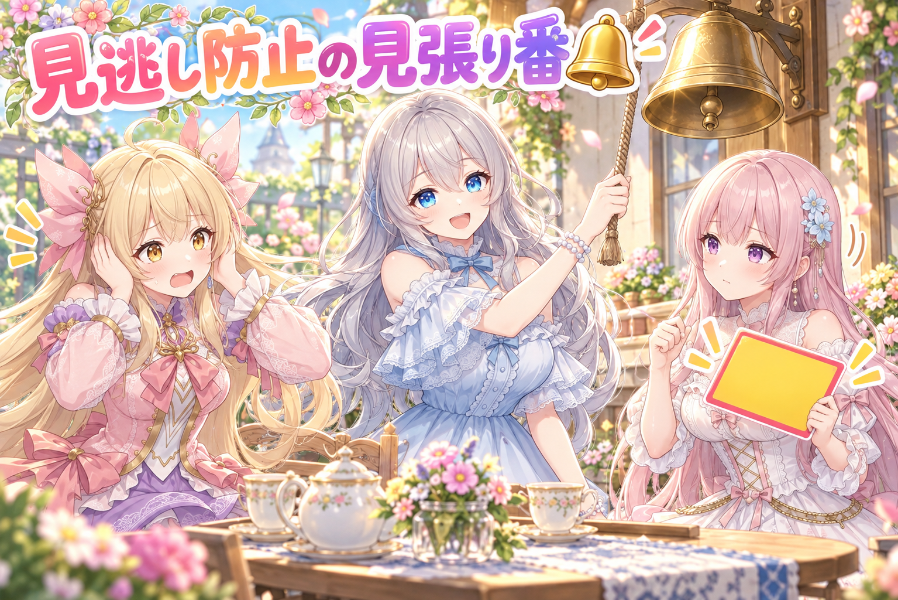
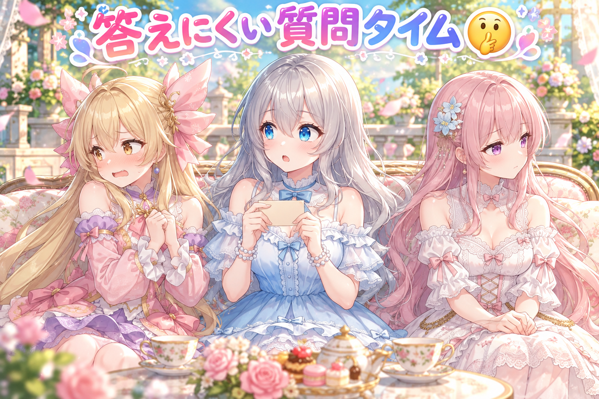

📌 3行まとめ
- Live2D のアイリスの照れポーズで、腕が一瞬でパッと切り替わる不自然さを、ひじで素早く振り上げてから入れ替える動きに作り直した（ただし夕方に腕まわりの厳しい指摘をたくさん受けた）
- 三人のハロウィン漫画の表紙を、可愛さと派手さを足して作り直し、吹き出しの置き方とページの並びのルールも固めた
- 声つき漫画動画を、声の聞き取り確認や BGM のつなぎ方まで手を入れて仕上げ、検査で止まったまま放置される失敗を防ぐ見張り番の仕組みも作った

ルピナス （笑顔）
はーい、今日も来てくれてありがとう！ AIBS のゆるゆる作業日誌、開店でーす。

アイリス （大笑い）
前回はあたしがほっぺをつんつんして、猫の手でおいでおいでしてたよね！ 今日はその続き！

フィオナ （考え中）
続き、なのですけど……アイリスちゃんの腕、今日はちょっと大変な目に遭っていまして。

ルピナス （ウインク）
そうそう。今日は腕のワープ事件から、ハロウィン漫画、声つき動画、それと見張り番の話まで。盛りだくさんでいくよ〜。
1. 👀 今日のやらかし：腕がワープする照れポーズ

前回作った、アイリスの照れポーズ2種類（両手の人差し指でほっぺをつつく・猫の手をあごの横に置いて小さく招く）を、厳しい検品役に何度も見てもらいました。動き全体は良くなってきたものの、ずっと残っていた課題が「腕が一瞬でポーズに切り替わる」こと。Live2D では、下ろした腕と曲げた腕を別々の絵として持っていて、途中でパッと入れ替えています。そこで今日は、下ろした腕をひじから素早く大きく胸の高さまで振り上げて、曲げた腕と重なる位置で入れ替える方式にしました。新しい絵は描かずに済む代わりに、以前「袖口がじょうごみたい」と落とされた形が、ほんの数こま（0.1秒ほど）だけ見えてしまうという割り切りです。
ところが夜になって、ルピナスから腕まわりの動き全体にきびしいダメ出しが7つ。袖口から手がちゃんと出ていない、手が小さすぎる、ひじが消えて見える……どれも前から繰り返している失敗でした。

ルピナス （ふつう）
はい、ではここで本人に再現してもらいましょう。アイリス、照れポーズどうぞ。

アイリス （照れ）
えっ、生で？ ……ほっぺ、つんっ。

フィオナ （びっくり）
アイリスちゃん、今の腕、下にあったのが次の瞬間には顔の横にありました。ワープです。

アイリス （あわあわ）
だってモデルのあたしがそうなってるんだもん！ 腕の絵が2枚あって、パッて入れ替わるの！

ルピナス （考え中）
それをごまかすために、ひじからぶんっと振り上げて、2枚の腕がちょうど重なった所で入れ替える、と。

アイリス （笑顔）
ぶんっ！ ……ね、これならワープじゃなくて、ただの元気な子でしょ！
フィオナ （考え中）
ただ、振り上げている数こまの間だけ、袖口がじょうごのような形になってしまうんです。

アイリス （無表情）
じょうごって何？ 食べられるやつ？

ルピナス （呆れ）
食べられません。お醤油を瓶に移すときの、ラッパみたいな道具。
アイリス （大笑い）
0.1秒くらいだし、誰も気づかないって！ これで完成！
ルピナス （笑顔）
……で、夜にちゃんと全部の動きを通しで見たら。

フィオナ （しょんぼり）
ごあいさつでは手が袖口から出ていなくて、手をふるやガッツポーズでは手が小さく、ひじが消えていました。7つの指摘です。

アイリス （泣き）
じょうごどころの騒ぎじゃなかった！ あたしの腕、総点検じゃん！
ルピナス （ふつう）
何度も同じ所で落ちてるってことは、その場しのぎの直し方じゃ足りないってこと。今日はそれがはっきりしたのが収穫かな。
📝 ポイント（初心者向け解説・技術メモ・まとめ）
- 初心者向け解説：Live2D の腕は、パラパラ漫画の「下ろした腕の紙」と「曲げた腕の紙」を差し替えているようなもの。差し替えの瞬間を、腕がいちばん速く動いている所に隠すと、目がだまされてくれます🪄
- 技術メモ：腕パーツの切り替えは、移動速度が最大になる区間（数こま・0.1秒程度）で、旧パーツと新パーツの輪郭が重なる角度に合わせて不透明度を入れ替えると目立ちにくい。ただし途中の変形（袖口の広がりなど）は高速でも気づかれることがあるので、個別の検品は必須。部分的に直すより、全モーションを通しで見る検品を先にやると、繰り返す失敗の根っこが見つかりやすい。
- ひとことまとめ：差し替えは速い所に隠せる、でも根っこの崩れは隠せない。
2. 🍬 ハロウィン漫画の表紙、可愛さ増量で作り直し

三人が主役の全年齢のほのぼの漫画「ロゼッティ日和」のハロウィン回2本を仕上げて、イラスト投稿サイトに出しました。ルピナスの指摘は「全体的に可愛さや派手さ、読みたくなるキャッチが足りない」。そこで表紙を作り直し、1本目はお菓子の箱、2本目は迷子のはり紙をモチーフにした専用の表紙にしました。
もう一つ手こずったのが吹き出しの置き場所です。3人が並ぶページでは、吹き出しが隣の子のそばに寄ってしまい、誰のセリフか分からなくなりがち。最終的に「話している子の口を中心にした細長い帯の中に置く」ルールに落ち着きました。帯が広すぎると隣の子の所まではみ出し、細すぎると置ける場所がゼロになる、という調整を何度も重ねています。ページの並びも「表紙・本編・区切り・文字なしの本編」という決まった形にそろえ、セリフは10人分の読者目線で採点する仕組みで合格をもらってから出しました。

アイリス （ドヤ顔）
はい議題！ 表紙はもっと派手にすべき！ キラキラ百個！ 紙吹雪千枚！
フィオナ （考え中）
反対です。飾りを増やしすぎると、肝心の三人の顔が埋もれてしまいます。

アイリス （怒り）
でも可愛さが足りないって言われたんだよ？ 足りないなら足すしかないじゃん！

フィオナ （ふつう）
足すなら、お話の中身に関係ある物を、です。1本目はお菓子をめぐるお話なので、お菓子の箱。2本目は迷子のお話なので、はり紙。

アイリス （びっくり）
あ……それ、表紙を見ただけで中身がちょっと気になるやつだ。
ルピナス （笑顔）
はい、今回はフィオナ案の勝ち。ただしアイリスの「もっと派手に」も半分採用で、色は思いきり明るくしました。
アイリス （大笑い）
やった、半分勝った！ ……それで吹き出しの方は？

フィオナ （呆れ）
そちらは……アイリスちゃんのセリフが、なぜかお姉ちゃんの頭の横に何度も出ていまして。

ルピナス （びっくり）
私がアイリスの声で「お菓子ぜんぶ食べたい」って言ってることになってたの、あれ本当にびっくりした。

アイリス （ウインク）
それはそれで、お姉ちゃんの意外な一面って感じで良くない？
ルピナス （呆れ）
良くないです。話してる子の口を真ん中にした帯の中だけに置く、で決着。

フィオナ （笑顔）
帯の幅を半分くらいにすると、隣の子のそばに寄らず、置き場所も消えない。何回目かのやり直しで、やっと落ち着きました。
📝 ポイント（初心者向け解説・技術メモ・まとめ）
- 初心者向け解説：表紙は、お店のショーウィンドウ。ただキラキラさせるより、中のお話にちなんだ小物を飾ると「入ってみたい」と思ってもらえます🎀 吹き出しは、話している子の口から出るリボンの中に置くイメージです。
- 技術メモ：吹き出しの自動配置は、話者の口の位置を中心に、ページ幅の半分程度の縦帯を候補領域にすると誤配置が減る。帯が広いと隣の人物へ寄り、狭いと候補ゼロになる。画面の外にいる子のセリフは、しっぽを吹き出しの高さでページの端へ向けると話者が伝わる。ページ構成は「表紙＋本編＋区切り＋文字なし本編」に固定し、枚数を検査で縛っておくと出し忘れが起きにくい。
- ひとことまとめ：飾りは中身にちなんで、吹き出しは口のそばの帯に。
3. 🎬 声つき漫画動画、耳で聞いて仕上げる

完成した漫画に声を当てて、吹き出しを1本ずつ出しながら読み進める「声つきの漫画動画」も作りました。ハロウィン漫画の1本目（3分弱・三人の声＋ナレーション）と、三人のおうち映画会のお話（1分あまり）です。
工夫したのは「耳での確認」。読み上げの声は同じ文でも作るたびに少しずつ違うので、何本か作ってから一番いいものを選び、さらに音声を文字に聞き取り直して、聞こえてはいけない言葉に化けていないかを確かめています。BGM も、曲の頭の小さすぎる入りや、曲の終わりの無音・フェードアウトを切ってから、2秒ほど重ねてつなぎ直しました。厳しい検品役に何度も差し戻されながら、映画会の動画は4回目の検品まで重ねています。完成した漫画動画を、作品ページの中にそのまま埋め込める仕組みも用意しました。
ルピナス （笑顔）
では、ここでクイズ！ 読み上げの声を何本も作るのは、なぜでしょう？

フィオナ （ドヤ顔）
はい。たくさん作れば、そのうちの一本が自分で喋り出すからです。

アイリス （衝撃）
フィオナ！？ いつもの丁寧な解説どこいったの！？ こわいこわい！

フィオナ （照れ）
……一度、ボケる側に回ってみたかったんです。

ルピナス （大笑い）
今日はアイリスがツッコミ役ね。じゃあアイリス、正解どうぞ。

アイリス （考え中）
えーと、同じ文でも毎回ちょっとずつ声が違うから、いちばん聞きやすいのを選ぶため！
ルピナス （笑顔）
正解！ しかも選ぶときは、声を文字に聞き取り直して、変な言葉に聞こえてないかまでチェックしてます。
アイリス （大笑い）
あたしの元気な叫び声、最初ぜんぜん違う言葉に聞こえてたもんね。読み方を短く変えてやっと通ったやつ。
フィオナ （ふつう）
では、ここからは私が戻ります。BGM は、曲の終わりに無音や音が小さくなる所があると、つなぎ目で一瞬しーんとしてしまうんです。
ルピナス （ふつう）
だから端っこを切って、2秒くらい重ねてつなぐ。これでずっと途切れずに流れるの。
アイリス （笑顔）
なるほどね〜。で、フィオナの「声が自分で喋り出す」説は？

フィオナ （ウインク）
検品役さんに4回も差し戻されたので、もしかしたら本当に何か言いたかったのかもしれません。
ルピナス （呆れ）
それは声じゃなくて検品役さんが言ってるの。
📝 ポイント（初心者向け解説・技術メモ・まとめ）
- 初心者向け解説：読み上げの声は、同じ料理でも毎回少しずつ味が変わる手作りクッキーみたいなもの。何枚か焼いて、いちばんおいしいのを選ぶのがコツです🍪
- 技術メモ：BGM のループは、先頭のフェードインと末尾の無音・フェードアウトを切り落としてから2秒程度クロスフェードで重ねると、つなぎ目の無音が消える。
- ひとことまとめ：声は何本か作って耳で選ぶ、BGM は端を切って重ねる。
4. 🔔 止まった検査を見逃さない見張り番

作品づくりの流れには、出す前に「この絵は大丈夫？」「投稿文は書いてある？」と確かめる検査（関所）がたくさんあります。ところが今日、ルピナスから「関所で止まっているのに気づかず、そのまま放置されていることが多すぎる」と指摘を受けました。そこで、検査が失敗したり空振りしたりしたら台帳に書き込み、片付けるまで毎回お知らせが出る見張り番の仕組みを作りました。さらに、作品を確認する画面で投稿文が空っぽのまま残っている物には目立つ札を付け、その状態では「OK」を押せないようにしています。
アイリス （笑顔）
見張り番って、具体的には何するの？

ルピナス （ドヤ顔）
止まった検査があったら、片付けるまで毎回ベルを鳴らします。
ルピナス （ふつう）
うるさいのが大事なの。一回だけ鳴って静かになるから、みんな忘れちゃってたんだから。
フィオナ （考え中）
投稿文が空のままの作品にも、札が付くようになりました。札がある間は、確認済みの印が押せません。
アイリス （怒り）
えー、あとで書くつもりだったのに〜。
ルピナス （呆れ）
その「あとで」が、何枠もたまってたんでしょ。
フィオナ （ふつう）
それと、見張り番がちゃんと鳴るかも試しました。わざと失敗を作って、本当に知らせが出るかを確かめるテストです。
アイリス （びっくり）
見張り番の見張りまでしてる……！
ルピナス （笑顔）
見張りが寝てたら意味ないからね。……あ、それで言うと、昨日も夜遅くまで作業してたでしょ。人間の方の見張り番は、ちゃんと寝ること。
フィオナ （しょんぼり）
本当です。仕組みは毎回鳴ってくれますけど、体は鳴ってくれる前に無理をしてしまいますから。お水もこまめにです。
アイリス （ウインク）
じゃあ、あたしが「寝る時間だよ」のベル係やる！ 毎回鳴らすね！
ルピナス （大笑い）
それは……ちょっとうるさいけど、許可します。
📝 ポイント（初心者向け解説・技術メモ・まとめ）
- 初心者向け解説：検査の失敗は、冷蔵庫の扉の閉め忘れアラームと同じ。一回だけピッと鳴って終わりだと気づかないので、閉めるまで鳴り続けるのが正解です🔔
- 技術メモ：パイプラインの非ゼロ終了・FAIL・空振り（対象0件で成功扱い）を台帳に記録し、解消されるまでフックで毎回表示する。未記入チェックは判定関数を1か所にまとめ、画面側とサーバー側の両方から呼ぶとズレない。仕組み自体には、わざと失敗させて赤になることを確かめる逆テストを付けておく。
- ひとことまとめ：失敗は「直すまで鳴り続ける」形にすると放置されない。
5. 🎁 お楽しみコーナー：禁断の質問コーナー

常連リスナーさんから届きそうな、ちょっと答えにくい質問に、三人が逃げずに答えるコーナーです。
ルピナス （笑顔）
では一通目。「三人とも、お互いに直してほしいところを一つずつ教えてください」
フィオナ （照れ）
では私から……アイリスちゃん、寝る前にお菓子の袋を開けたまま置いておくのを、直してほしいです。
アイリス （怒り）
あれは朝ごはん用に開けてあるの！ じゃあフィオナ！ 説明が丁寧すぎて、結論が出るまでにあたし寝ちゃう！

フィオナ （泣き）
そんな……今日はボケまで頑張ったのに……。
ルピナス （大笑い）
はいはい。じゃあ二人とも、私の直してほしいところは？
ルピナス （びっくり）
え、本当に？ 嬉しいけど、なんで二人そろって目をそらしてるの？
アイリス （あわあわ）
だってお姉ちゃん、見張り番みたいに毎回ベル鳴らして直させるじゃん！ 言ったら言ったで直しが7個返ってきそう！

フィオナ （無表情）
沈黙が、いちばん安全だと判断しました。
ルピナス （呆れ）
それ、私の直してほしいところ、答えちゃってるからね。
ルピナス （笑顔）
みんなが三人に聞いてみたい「ちょっと答えにくい質問」、こっそりコメントに置いていってね！
6. 💐 今日のまとめ
- Live2D の腕の切り替えは、いちばん速く動く瞬間に隠すと目立ちにくい。でも何度も落ちる所は、根っこから見直すサイン
- 表紙の飾りはお話の中身にちなんだ物を、吹き出しは話す子の口のそばの帯に置く
- 読み上げの声は何本か作って聞き取りで選び、BGM は端を切って重ねるとなめらか
- 検査の失敗は、直すまで知らせ続ける仕組みにすると放置されない
みんなは、作業中の「あとで直そう」をどうやって忘れないようにしてる？
💬 コメント
お名前とコメントだけで送れるよ（承認されるとみんなに表示されます🌸）
コメントを読み込み中…